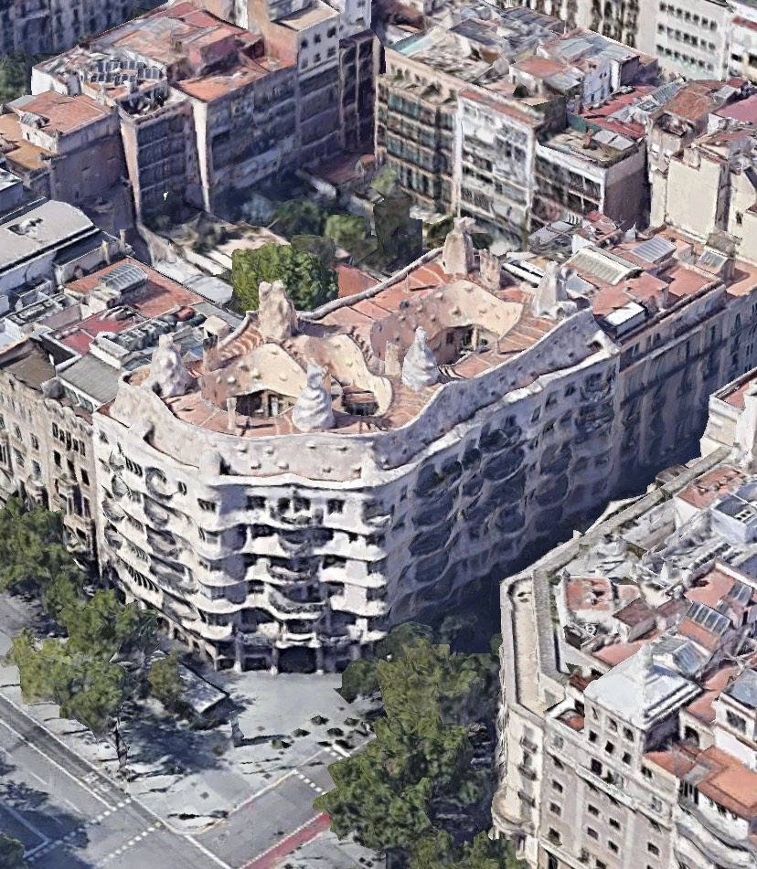

Casa Milà (La Pedrera, dom Mili) – budynek w Barcelonie powstały w latach 1906-1910. Znajduje się na rogu ulic Passeig de Grácia i Provença, w środkowej części miasta.
Zaprojektował go i wykonał Antoni Gaudí dla przedsiębiorcy Pere Mili i jego żony. Jest to najbardziej dojrzały i ostatni projekt „świecki” tego architekta. Casa Milá, jak pragnął sam Gaudí, miała być odpowiedzią na brak interesujących budynków w mieście. Ze względu na prezencję (budynek wygląda jak potężny skalny blok) barcelończycy przezwali go La Pedrera, co znaczy Kamieniołom.
W projekcie tym Gaudí nie używał, lub używał minimalnie, prostej kreski. Powoduje to, że fasada budynku przypomina wzburzone morze. Wygląda ciężko i monumentalnie choć wzniesiona jest z cienkich wapiennych płyt. Balkony zdobią kute z żelaza balustrady przybierające kształt dzikich chaszczy. Ozdobą fasady głównej są również specjalnie rozmieszczone ptaki, które maja sprawiać wrażenie szykujących się do odlotu. W środku budowli widać dbałość Gaudíego o szczegóły; każdy sufit posiada własną formę gipsową. Godne uwagi są też liczne mozaiki i stolarka. Na dachu architekt stworzył kominy przypominające kształtem dym. Całość wzniesiona została na nowatorskiej konstrukcji słupowo-belkowej, która jest wykonana w taki sposób, aby zmniejszyć ilość przekrojów (spowodowane było to niemożliwością opłacenia droższych materiałów)
Casa Milà nie została skończona z powodów zatargów z inwestorem. Pomimo to uważa się ją powszechnie za najpełniejsze dzieło Gaudíego, w którym zastosował w pełni owoce swego doświadczenia.
Casa Milà w literaturze i mediach
Jedna ze scen w filmie Zawód: Reporter, wyreżyserowanym przez Michelangelo Antonioniego, została nakręcona na dachu budynku.
Eoin Colfer wspomina budynek w swojej książce pt. Artemis Fowl: The Lost Colony.
Wiele scen z filmu Gaudi Afternoon zostało nakręconych przed Casa Milà.
Budynek występuje w powieści Początek Dana Browna.